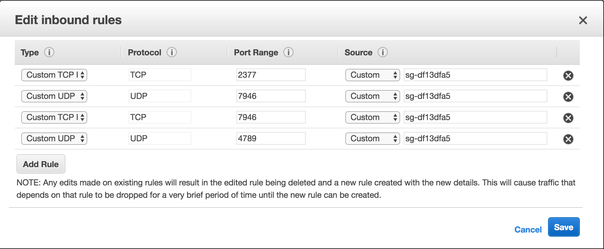
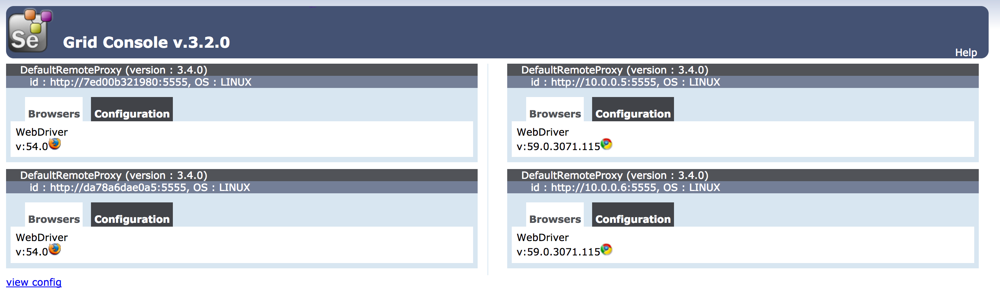

Selenium Grid helps us to group multiple machines as worker nodes to provide browsers for our tests. To run multiple tests in parallel grid is a must.
With Docker Swarm it becomes easy to create dynamic grid, which can be scaled on need. This article will walk you through setting up a Grid on AWS using 3 machines (1 manager, 2 worker node). The minimum recommeded setup is of 5 machines at least (3 manager, 2 worker nodes).
By default in a Docker Swarm even the master nodes participate as worker. Until unless required, master nodes shouldn’t be used for deploying workloads. In our demo also we won’t deploy hub or nodes to any of the manager nodes.
Creating the Docker SWARM security Group
Docker Swarm requires few ports to be open for it to work. These are
- TCP port 2377. This port is used for communication between the nodes of a Docker Swarm or cluster. It only needs to be opened on manager nodes.
- TCP and UDP port 7946 for communication among nodes (container network discovery).
- UDP port 4789 for overlay network traffic (container ingress networking).
So first create a group that has all these ports whitelisted

Creating the Base Machines on AWS
Create 3 machines of t2.micro instance type and choose Ubuntu Server 16.04 LTS (HVM), SSD Volume Type as the OS. We will be using ubuntu so that latest version of Docker can be installed. Make sure to attach the Docker Swarm security we created earlier
First install docker on all 3 machines
$ curl -SsL https://get.docker.com | sh
This will install the latest version of Docker. Then add the ubuntu user to the docker group, so we don’t need to use sudo everytime we use the docker command
$ sudo usermod -aG docker ubuntu
Setting up the Firewall
$ sudo ufw status
Status: inactive
If you get active as the output of above command then you need to either configure the firewall or disable it
Disabling the firewall
$ sudo ufw disable
The above will disable the firewall
Configuring the firewall
If you prefer to configure the firewall then use the below set of commands
$ sudo ufw allow 22/tcp
$ sudo ufw allow 2377/tcp
$ sudo ufw allow 7946/tcp
$ sudo ufw allow 7946/udp
$ sudo ufw allow 4789/udp
$ sudo ufw allow 4444/tcp
For more details on setting up the firewall correctly on your setup, refer to this article
Setting up the SWARM master
Choose one machine as the master machine and initiate Docker Swarm mode on the same
$ docker swarm init
Swarm initialized: current node (deyp099wnn94lgauxp9ljil83) is now a manager.
To add a worker to this swarm, run the following command:
docker swarm join --token SWMTKN-1-5rm2sib935txv5k13j6leaqsfuuttalktt7jv4s55249izjf54-8ia31tagc4sbehqeqiqst4jfz 172.30.0.170:2377
To add a manager to this swarm, run 'docker swarm join-token manager' and follow the instructions.
Now on the other two machines execute the join the command
$ docker swarm join --token SWMTKN-1-5rm2sib935txv5k13j6leaqsfuuttalktt7jv4s55249izjf54-8ia31tagc4sbehqeqiqst4jfz 172.30.0.170:2377
This node joined a swarm as a worker.
Once done execute the docker info command on master node
$ docker info
...
Swarm: active
NodeID: deyp099wnn94lgauxp9ljil83
Is Manager: true
ClusterID: ujst6yr4orqiyago1u277pppp
Managers: 1
Nodes: 3
...
If everything worked, you will see Swarm: active and Nodes: 3 in the output (3 because even manager is one of the nodes)
Creating the Selenium Grid
Next we create Docker stack compatible compose file. I will show the complete file first and then talk about small details which need attention
grid.yaml
version: "3"
networks:
main:
driver: overlay
services:
hub:
image: selenium/hub:3.2.0
ports:
- "4444:4444"
networks:
- main
deploy:
mode: replicated
replicas: 1
labels:
selenium.grid.type: "hub"
selenium.grid.hub: "true"
restart_policy:
condition: none
placement:
constraints: [node.role == worker]
chrome:
image: selenium/node-chrome
entrypoint: >
bash -c '
export IP_ADDRESS=$$(ip addr show eth0 | grep "inet\b" | awk '"'"'{print $$2}'"'"' | awk -F/ '"'"'{print $$1}'"'"' | head -1) &&
SE_OPTS="-host $$IP_ADDRESS" /opt/bin/entry_point.sh'
volumes:
- /dev/urandom:/dev/random
- /dev/shm:/dev/shm
environment:
HUB_PORT_4444_TCP_ADDR: hub
HUB_PORT_4444_TCP_PORT: 4444
NODE_MAX_SESSION: 1
networks:
- main
deploy:
mode: replicated
replicas: 2
labels:
selenium.grid.type: "node"
selenium.grid.node: "true"
selenium.grid.node.type: "chrome"
restart_policy:
condition: none
placement:
constraints: [node.role == worker]
firefox:
image: selenium/node-firefox
entrypoint: >
bash -c '
export IP_ADDRESS=$$HOSTNAME &&
SE_OPTS="-host $$IP_ADDRESS" /opt/bin/entry_point.sh'
volumes:
- /dev/shm:/dev/shm
- /dev/urandom:/dev/random
environment:
HUB_PORT_4444_TCP_ADDR: hub
HUB_PORT_4444_TCP_PORT: 4444
NODE_MAX_SESSION: 1
networks:
- main
depends_on:
- hub
deploy:
mode: replicated
replicas: 2
labels:
selenium.grid.type: "node"
selenium.grid.node: "true"
selenium.grid.node.type: "firefox"
restart_policy:
condition: none
placement:
constraints: [node.role == worker]
Selenium version
I have used image: selenium/hub:3.2.0 for this demo instead of the latest one. Why? This is because of an issue in the latest version of grid. The discussion about the issue can be followed on #3808 Grid does not handle w3c capabilities correctly.
Port mapping
We have exposed the ports as 4444:4444 which basically means one can connect to the grid on port 4444 on any node in the Swarm network. But we have not done this for the nodes as we don’t want to expose individual nodes on the Swarm nodes.
Deployment constraints
Constraint options constraints: [node.role == worker] allows us to place our workload on the worker node instead of the manager nodes. In case you want to run the hub on the manager node use [node.role == manager] as the value instead
Environment variables
We define two environment variables HUB_PORT_4444_TCP_ADDR: hub and HUB_PORT_4444_TCP_PORT: 4444 for our nodes. This is because the selenium entrypoint script uses these environment variables. These variables were automatically created when using links in earlier version of Docker. This feature is now deprecated and the variables don’t get created anymore. So we need to define thim
Volume mappings
Volumes /dev/shm and /dev/urandom are shared from the host machine as they are necesarry for certain working of the browser. You can see more details on issues that arise if not sharing these volumes session deleted because of page crash and node-chome tab crash in docker only
Entrypoint override
I have used two different approaches for overriding the entrypoints of chrome and firefox images
# For Chrome
entrypoint: >
bash -c '
export IP_ADDRESS=$$(ip addr show eth0 | grep "inet\b" | awk '"'"'{print $$2}'"'"' | awk -F/ '"'"'{print $$1}'"'"' | head -1) &&
SE_OPTS="-host $$IP_ADDRESS" /opt/bin/entry_point.sh'
# For Firefox
entrypoint: >
bash -c '
export IP_ADDRESS=$$HOSTNAME &&
SE_OPTS="-host $$IP_ADDRESS" /opt/bin/entry_point.sh'
The reason for using two different approaches was to showcase both methods.
So first of all, why do we need to override the host in SE_OPTS? Well the reason is that a container can have multiple interfaces and when we start selenium-server.jar it tries to make a guess based on the interfaces available. It then sends this address to hub to contact it back. In case of multiple interfaces the address can determined wrongly and the hub is not able to communicate back with the node.
To fix this issue we need to ourself determine the IP or hostname of the container.
So there are two approaches here, one is to use the hostname of the container. This is random and would be alphanumeric. Second approach is to use the IP address. This requires the ip command to be installed on the container image. This is available in the chrome image but not in firefox image. So the hostname approach will work in both the cases. Docker automatically creates a environment named HOSTNAME inside the running container. We use a double dollar $$ to make sure docker doesn’t process the environment variable while parsing our compose file

Port 4444 in Security Group
Port 4444 which we published also need to opened in the Security Groups of all 3 machines
Those are majorly the points that were not very obvious about our compose file. So now let’s look at deploying this stack
Deploying the Selenium Grid
Execute the below command on the Swarm manager node
$ docker stack deploy --compose-file grid.yaml grid
Creating network grid_main
Creating service grid_hub
Creating service grid_chrome
Creating service grid_firefox
Now we can check status of our stack using the stack ps command
$ docker stack ps grid
ID NAME IMAGE NODE DESIRED STATE CURRENT STATE ERROR PORTS
l8zykev3dp29 grid_firefox.1 selenium/node-firefox:latest ip-172-30-0-23 Running Preparing 14 seconds ago
xjrdfxyt3voc grid_chrome.1 selenium/node-chrome:latest ip-172-30-0-23 Running Preparing 16 seconds ago
fyj8snygf5gs grid_hub.1 selenium/hub:3.2.0 ip-172-30-0-69 Running Preparing 18 seconds ago
ssbgye4iu76h grid_firefox.2 selenium/node-firefox:latest ip-172-30-0-69 Running Preparing 13 seconds ago
urciuebirsr7 grid_chrome.2 selenium/node-chrome:latest ip-172-30-0-69 Running Preparing 16 seconds ago
Testing the grid
We will use python to test our grid. Python doesn’t come pre-installed on the ubuntu images of AWS. So we need to first install python
$ sudo apt update && sudo apt install -y python python-pip
Once we have python, we need to install the selenium package
$ pip install selenium==3.3.1
Note: I have installed Selenium
3.3.1version to avoid the Issue #3808. You will get an exception with below message in case you use a higher version selenium.common.exceptions.WebDriverException: Message: None Stacktrace: at java.util.HashMap.putMapEntries (:-1) at java.util.HashMap.putAll (:-1) at org.openqa.selenium.remote.DesiredCapabilities. (DesiredCapabilities.java:55)
Once done we can execute the below commands in python
$ python
Python 2.7.12 (default, Nov 19 2016, 06:48:10)
[GCC 5.4.0 20160609] on linux2
Type "help", "copyright", "credits" or "license" for more information.
>>> from selenium import webdriver
>>> from selenium.webdriver.common.desired_capabilities import DesiredCapabilities
>>>
>>> grid_url = "http://127.0.0.1:4444/wd/hub"
>>> driver = webdriver.Remote(grid_url, DesiredCapabilities.FIREFOX)
>>>
>>> driver.get("http://tarunlalwani.com")
>>>
>>> driver.current_url
u'http://tarunlalwani.com/'
>>>
So our grid is now working on Swarm. If you want to scale the grid nodes use the scale command
$ docker service ls
ID NAME MODE REPLICAS IMAGE PORTS
050nvxan3von grid_firefox replicated 2/2 selenium/node-firefox:latest
no6klfawrm2h grid_chrome replicated 2/2 selenium/node-chrome:latest
t33b1eqzzokt grid_hub replicated 1/1 selenium/hub:3.2.0 *:4444->4444/tcp
$ docker service scale grid_chrome=4
grid_chrome scaled to 4
$ docker service ls
ID NAME MODE REPLICAS IMAGE PORTS
050nvxan3von grid_firefox replicated 1/2 selenium/node-firefox:latest
no6klfawrm2h grid_chrome replicated 4/4 selenium/node-chrome:latest
t33b1eqzzokt grid_hub replicated 1/1 selenium/hub:3.2.0 *:4444->4444/tcp
As you can see, with one we can scale our grid up and down. One can even apply Auto Scaling for adding new worker nodes based on the load.